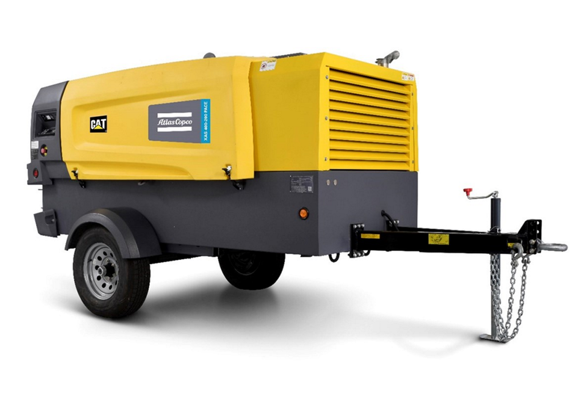
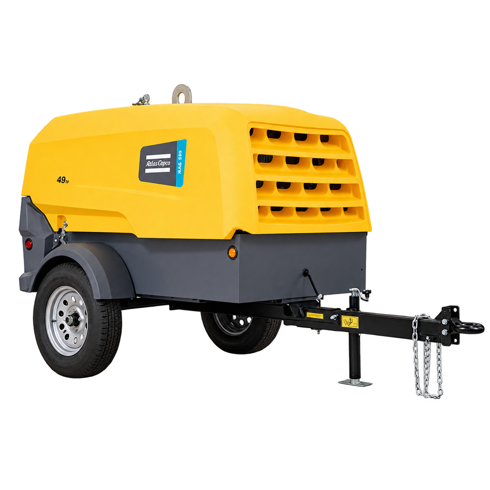
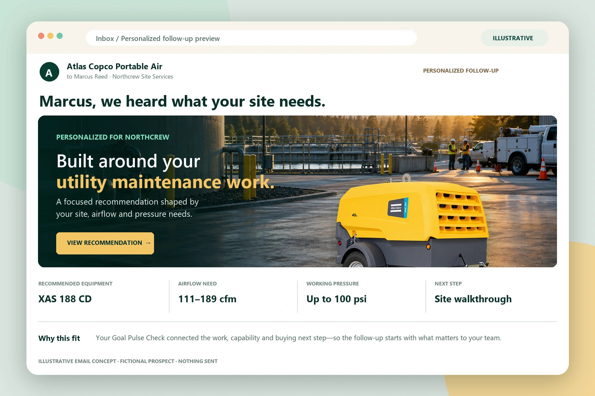
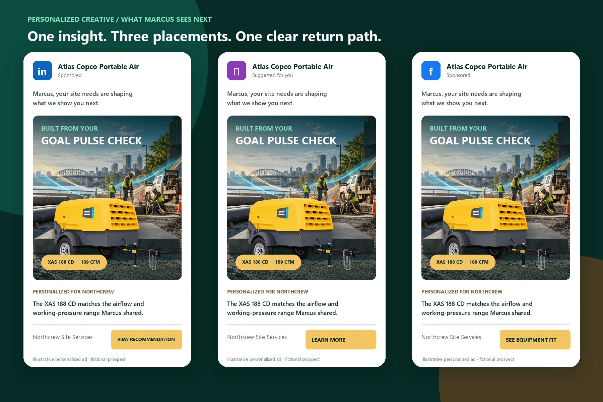

Create the first opening.
Trade shows, pop-ups, referrals and prospecting ads attract new interest. LinkedIn Opportunity Scouting helps sales representatives find relevant local decision-makers and begin a direct conversation about their work.
LORENZO WHITE · ZAH BRAND SOLUTIONS × ATLAS COPCO POWER TECHNIQUE
A connected marketing strategy that captures what each prospect needs, personalizes the return and keeps every lead visible through the next action—even after a dealer or distribution handoff.

01 / PROTECTIVE CANOPY02 / DIESEL ENGINE03 / AIR END04 / COOLING CIRCUITILLUSTRATIVE CUTAWAY · NOT FACTORY CAD01 / THE PROBLEM TO SOLVE
Phone calls, web forms, campaigns and events can put interest into C4C. But when a lower-value opportunity is passed onward without an owned next action, Atlas Copco loses visibility before the lead has a chance to convert.

Edson mentioned marketing is roughly 3% of investment, and about 70% comes from rentals and smaller-lead routing. That's my recollection, not a confirmed figure — I could have the exact numbers wrong, so treat this as a starting point for the conversation, not a fact.
New interest enters from several channels.
Passing a lead to another channel should never make the relationship disappear. Without a visible owner, due next action and recorded outcome, the lead becomes cold—and the business cannot learn what converted or what was lost.
Illustrative current-state journey based on the interview discussion. Exact qualification thresholds, routing rules and C4C workflow should be confirmed with Atlas Copco.
02 / THE CONNECTED JOURNEY
A trade-show conversation, a LinkedIn introduction, a video or a referral can all begin the same connected journey: listen first, make the return relevant and keep a person responsible for what happens next.
Choose a channel to watch one lead path move. Choose it again to see who it reaches, what happens there and how the conversation continues.
Every completed Goal Pulse Check creates or enriches the C4C record, generates a personalized equipment brief and assigns a sales professional with a due next action. A walkthrough activates when the prospect requests one or the opportunity is qualified. Personalized email and eligible retargeting continue alongside the owned sales path.
Every profile moves through the same required path. Walkthrough activates only when requested or qualified.
A ten-second illustration, not actual lead volume or performance. Each dot represents five illustrative profiles moving through the same required milestones. No C4C record, email, ad or walkthrough is created from this presentation.
Trade shows, pop-ups, referrals and prospecting ads attract new interest. LinkedIn Opportunity Scouting helps sales representatives find relevant local decision-makers and begin a direct conversation about their work.
The Goal Pulse Check groups captured prospects by application, equipment interest and next-step readiness. Those results shape a personalized equipment page and personalized LinkedIn and YouTube creative that gives eligible prospects a relevant reason to return.
A named sales professional owns the due next action. A walkthrough activates when requested or qualified. If a dealer, distributor or another team helps serve the customer, the internal owner, accepted handoff and next action stay visible for accountability.
Goal Pulse Check results guide eligible audience segments and personalized creative. Ad delivery depends on consent, matching and platform eligibility.

Large displays show the application. A real machine and a staffed, hands-on demonstration make the capability tangible. A tablet or QR invitation opens the Goal Pulse Check while the conversation is still fresh.
03 / THE CUSTOMER EXPERIENCE · INTERACTIVE DEMO
A useful recommendation begins with the person and the work. The Goal Pulse Check connects their application, buying team and timing to a personalized equipment page.Try the experience below, one focused choice at a time.
AFTER SUBMIT · THE CONVERSION EXPERIENCE
The Goal Pulse Check does not end at submit. It powers the personalized page, email and retargeting creative that bring the prospect back to a clear next action.
Based on your Utility maintenance needs, this equipment gives your team a focused place to continue the conversation.



Open full-size ↗A short application-led video reconnects with eligible prospects, repeats the matched value clearly and returns them to the same personalized equipment page.
Illustrative previews only. Retargeting requires consent, audience matching and platform eligibility. No email, advertisement, booking or pricing request is sent from this presentation.
04 / THE SALES EXPERIENCE
The primary path moves each prospect toward a walkthrough, refined recommendation and quote, rental or purchase decision. If a partner is needed, the assigned sales professional and due next action remain visible until the outcome is recorded.Open a sample record to explore the workflow.
The main path moves from a captured need to a recorded business outcome. The assigned sales professional remains accountable for the next action, even when a dealer, distributor or rental partner helps serve the customer.
A completed Goal Pulse Check creates a C4C lead record or enriches the matching record with the prospect’s application, equipment needs and preferred next step. That context powers the initial personalized equipment brief and supports assignment to a sales professional with a due next action. Sales and marketing can review the accountable owner, latest activity and outcome in one connected view. When a partner is used, acceptance stays visible too.
Fictional C4C-style sample. No live connection.
An approved export can supply a dated snapshot. A verified API or integration can support refreshes and permitted updates. We first confirm their C4C edition, available services, field access and matching rules.
Importing a file does not create live synchronization. Returning activities to C4C requires an explicitly configured connection. This prototype demonstrates the flow locally.
Fictional sample records plus your local profile. Real C4C integration requires edition, API access and workflow validation. No live CRM or messaging connection is active.
05 / FROM ACTIVITY TO OUTCOME
More attention only helps when the conversation continues. Explore how consistent, recorded follow-through could change the value of interest already entering the business.Adjust the assumptions to explore the model.
Illustrative assumptions, not a forecast. No costs, attribution model or incremental profit are implied.
06 / START FOCUSED. LEARN. EXPAND.
Understand the site before choosing the message. Build a focused pilot, measure what happens after capture, and improve the experience before expanding it.
LORENZO WHITE / STRATEGY → SYSTEMS → EXPERIENCETHE PERSON BEHIND THE SYSTEM
Growth Marketing Strategy & Systems Architect
I approach marketing like an engineer: understand the moving parts, design the connections, and make the outcome measurable. I created the Triple A System as the philosophy behind this approach. It connects understanding, thoughtful adjustment and a clear next step. This is how I present an idea—by putting the experience in your hands.
Understand the situation. Adjust the approach. Make the next step visible. The same thinking connects this entire customer journey.
Scan and follow along on your phone.
An independent interview proposal by ZAH Brand Solutions. Equipment source photos and published specifications: Atlas Copco. Transparent equipment visuals are AI-assisted cutouts derived from those photos; consult manufacturer imagery for exact configuration. The interactive cutaway is an illustrative model, not factory CAD. Final selection requires engineering review of application, pressure, flow, altitude, environment and duty cycle.
XAS 110 KD · XAS 188 CD product reference · XAS 400-150 CD. Accessed September 21, 2026.
Capability scores compare the three illustrated machines using published airflow, working pressure, wet weight and application range; they are not quality, efficiency or final-sizing ratings. The original Tip Jar Soda Pop is used for earned achievements and the candidate entrance. Personal information remains in this browser unless you choose to download your brief. Public share links omit your contact details. Walkthrough preferences are requests in a local demonstration, not confirmed bookings. No U.S. market ranking is asserted.